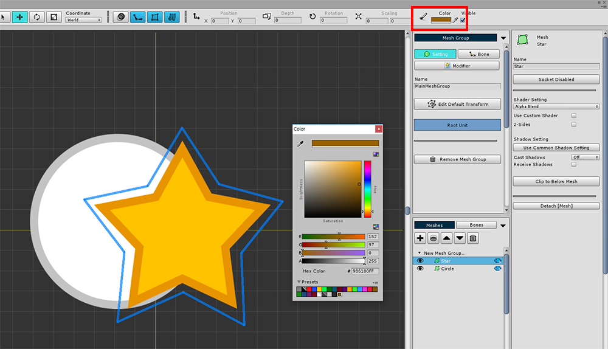
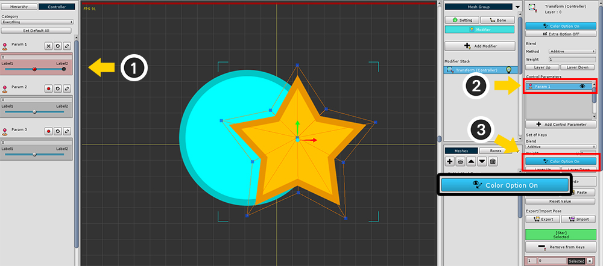
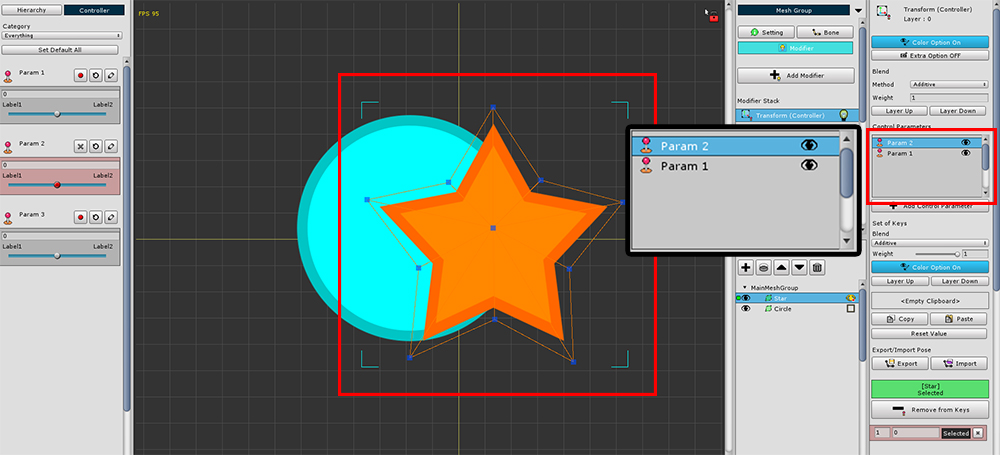
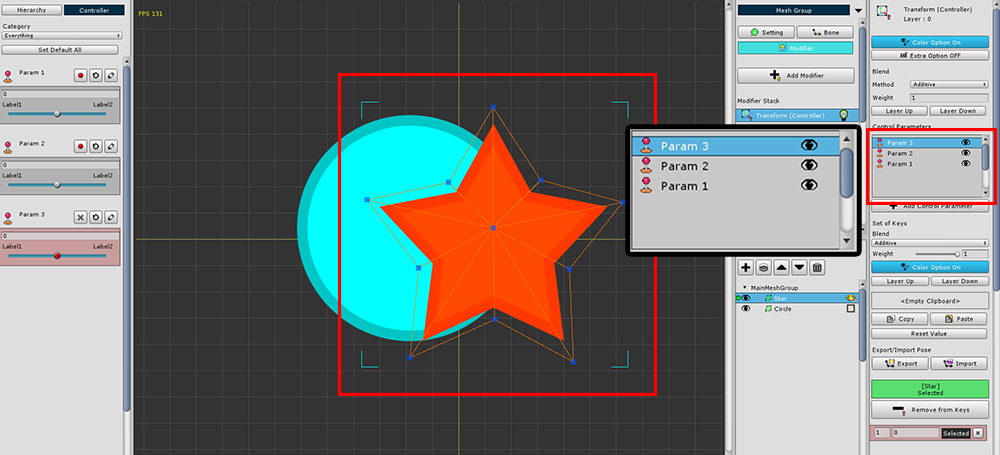

AnyPortrait > Manual > Color problem with multiple modifiers
Color problem with multiple modifiers
1.0.6
The modifier allows you to change the color of the meshes.
However, when using multiple modifiers or control parameters, colors may be applied incorrectly and the color of the mesh may become darker.
Typically, this problem occurs when you add a modifier after modifying the "default color of the mesh".
This page explains when color problems occur and how to fix them.

I prepared two meshes.

Select the mesh, and change the default color.
The colors are applied in a "2X Multiply" (a method in which 2x RGB and 1x Alpha are multiplied).
In the same way I changed the default colors of the other mesh.
(Remember the color value set at this time.)

Add the "Transform (Controller)" modifier.
Likewise, you can add a "Morph (Controller)" modifier to assign a color.

Turn on the "Color Option" to change the mesh color with the modifier.

I created three control parameters to reproduce the color problem.
You will get the same results as using multiple modifiers.
(1) With the mesh selected, press the "Record button" of the control parameter.
(2) Make sure that the control parameter added to the modifier is selected.
(3) Turn on the "Color Option" like the modifier so that the color can be changed by the control parameter.

Add the second control parameter to the modifier in the same way.
However, you can see that the color of the mesh is getting darker.
(Depending on the color, it may be brighter.)

As the third control parameter is added, you can see that the colors change more.
Currently, I have not changed the color of the mesh according to the control parameters.

Let's figure out the cause of the problem.
(1) Select the Control Parameter.
(2) Turn on the Edit mode.
(3) If you check the color value while the mesh is selected, you can see that the "default color of mesh" set above is specified.
This is what happens because the default color of the mesh is applied as the default for all control parameters or modifiers.
While AnyPortrait can be used with multiple modifiers or control parameters,
If multiple color values are applied at the same time, you can see unintended results.

If you set the color values other than the first control parameter to gray (0.5, 0.5, 0.5, 1) which is the default value, rendering will be done normally.

Alternatively, turning off the "Color Option" of control parameters or modifiers that do not control color is a good way to solve the problem.